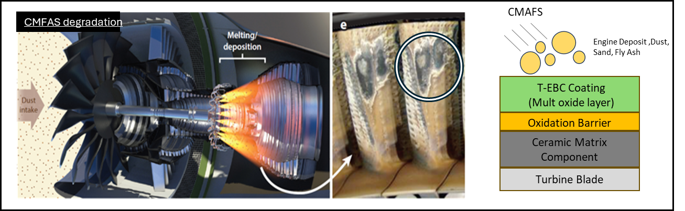
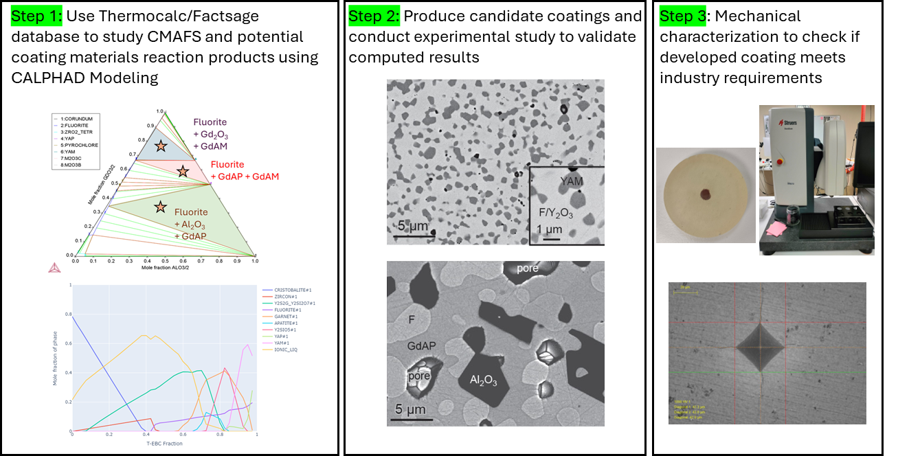
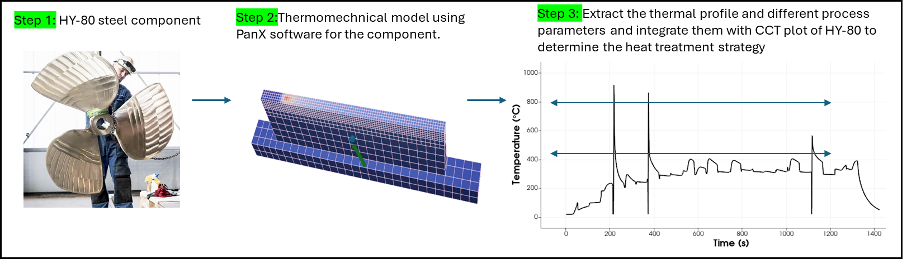
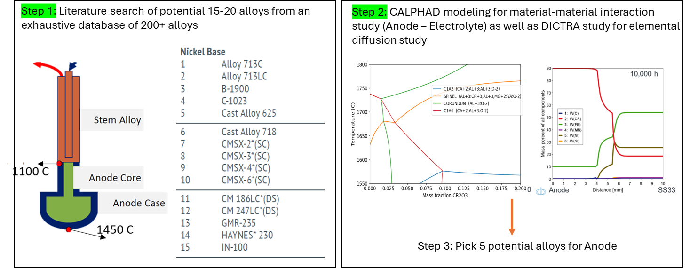

Internship: Questek
Team - Amit Behera, Noriaki Aria, James Male, Yu Lin, Andrea Love
Project 1: Computationally develop a novel Thermal-Environmental Barrier Coating for Turbine Blade

Technical Details: Aero engines and gas turbines traditionally operate at around 1300C, but there is a drive to achieve higher temperatures to enhance efficiency and performance.
Ceramic matrix composites (CMCs) can boost operating temperatures by 100-150 C, reduce component weight, and offer excellent corrosion and oxidation resistance, thus improving overall engine performance.
Environmental degradation due to deposits from the Ca-Mg-Fe-Al-Si (CMFAS) oxide system, such as fly ashes, sand, and dust, is addressed using multilayer multiphase oxide coatings designed at QuesTek to work across different CMFAS compositions, using computational capabilities to accelerate the design process.
After thorough study on CTE, thermal stability, and phases a unqiue combination of material was selected as promising TBC material. Six compositions of the systems were produced by the University of Minnesota and I tested their toughness using Vickers indentation, revealing that the best system with higher fracture toughness—up to 13 percent greater than some existing TBC coatings.
This project showcases the potential for advanced TBCs to meet the rigorous demands of next-generation aero engines, paving the way for more efficient and durable aerospace components.

Project 2: Computationally design heat treatment strategy for wire arc Additive Manufacturing of HY-80
Technical Details: HY 80 steel is crucial for naval structures due to its strength and corrosion resistance.
Transitioning from traditional casting to Wire Arc Additive Manufacturing (WAAM) promises higher deposition rates for large-scale parts, using MIL-100S-1 as a substitute for direct HY-80 3D printing.
However, initial DED-printed MIL-100S-1 showed potential brittle fractures at low temperatures, likely due to inconsistent in-process tempering. To optimize this, Questek was tasked with extracting crucial thermophysical properties using ThermoCalc and ICMD, modeling realistic thermal profiles via PanX software, and conducting phase transformation studies.
The objective is to refine process parameters and heat treatment schedules, enhancing the performance and reliability of WAAM components for naval use.

Project 3: Computationally select anode material for electrolytical iron extration process
Technical Details: Iron-based alloys are essential in various industries, but traditional blast furnace extraction generates over 2 billion tonnes of CO2 globally.
Boston Metal has innovated a scalable, environmentally friendly electrolytic solution that produces high-purity liquid iron without harmful by-products.
The component STEM alloy features high creep and tensile strength, operates effectively between 800 to 1300 C, and offers good conductivity and oxidation resistance at a low cost.
The process uses an electrolyte with a melting point below 1500 C, high iron oxide solubility, adequate ionic conductivity, and minimal anode corrosion.
Employing thermodynamic calculations from ThermoCalc and Factsage, I conducted material-to-material calculations to understand phase behaviors at various temperatures to propose few STEM alloys for the process.
